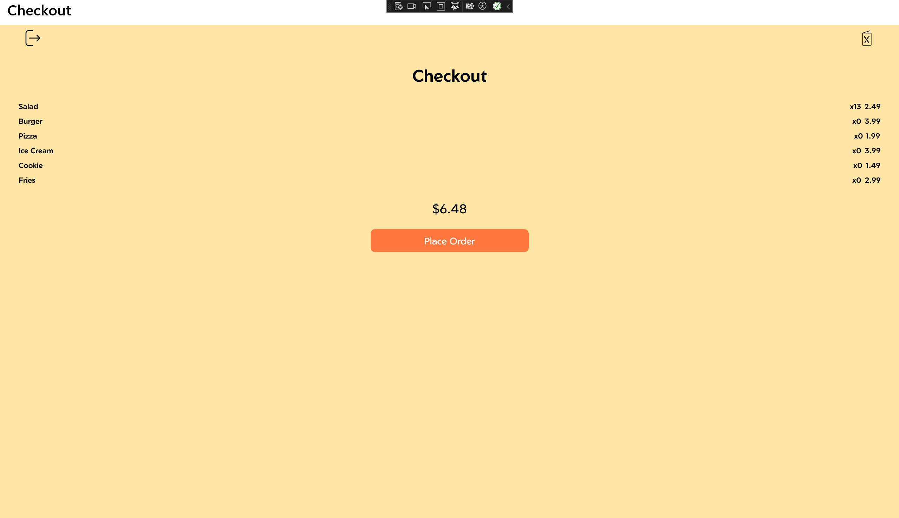
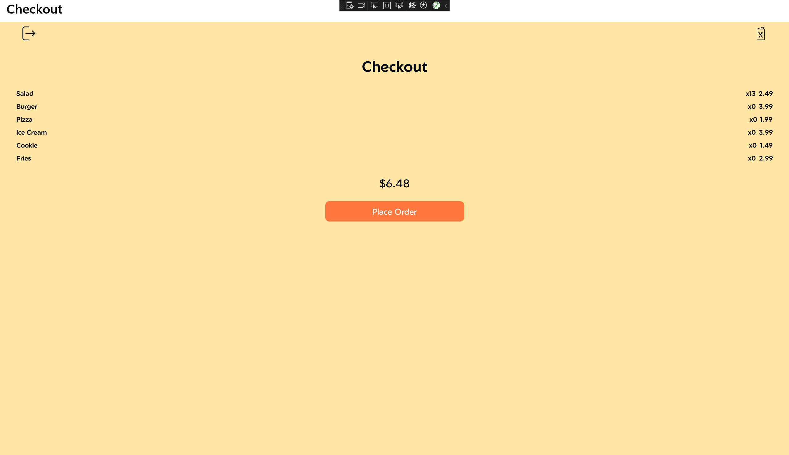

RIT Dining Kiosk Simulator
 

Role: Project Manager and Programmer
Languagues Used: HTML, Javascript, CSS
Programs Used: Dog CEO API, Visual Studio Code, Github
What is the purpose of this application: This application is meant to simulate how an ordering kiosk for a RIT dining resturant could possibly work. This application is meant to be bring a de-stressor to your day. Seeing some funny photos of dogs is one the best ways to take your mind off of things, and I wanted to give myself and others an easy way to do that. This program parses the Dog CEO API, and returns photos of the specified dog you inputted. Click next and previous results to see the next dog in the image chain in a bigger more clear format.
What was the design process: I started my design based around retrieving and parsing the information from Dog CEO. I parse the initial request made by the user for the dog breed and amount of photos, and then I return the images found to the results tab, and the first photo goes to the main focus. I designed the next and previous to move through the parsed photos only appearing on the site.
What did I learn in this design process: I learned how to XHR response urls, for the purpose of putting the dog photos on the screen. I continued to learn more about Javascript, HTML, and CSS coding, as well as formatting webpage designs.
View ProjectView Github Page